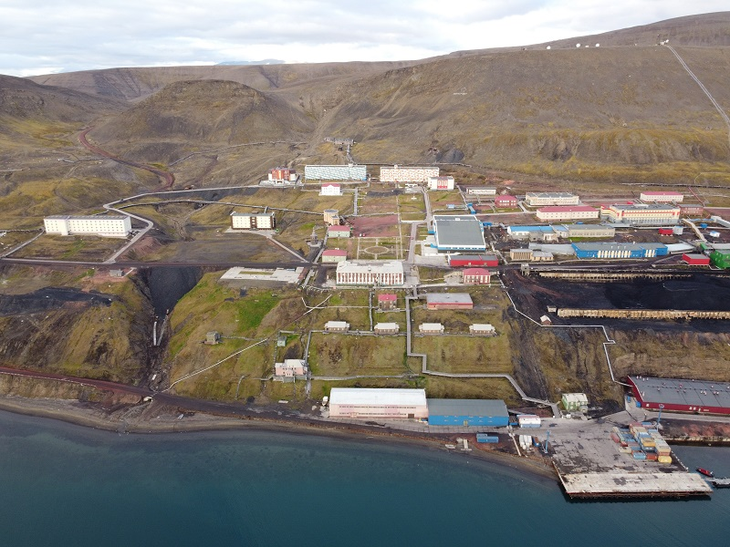

Pirmosios dienos
Rugpjūčio mėnesį skaitant naujienas sukrėtė žinia, atskriejusi iš Svalbardo salyno - baltoji meška užpuolė ir mirtinai sužalojo žmogų. O juk tik prieš keletą dienų su bičiuliu patys buvome iš ten parskridę. Apie tai, ką pasaulio pakrašty pamatėme, ką išgirdome, ko bijojome ir kaip nugalėjome save, aprašysiu trumpoje straipsnių serijoje.

Bilietus už 400 eurų pirkome rizikuodami - nežinojome ar Norvegija bus atvira turistams, ar reiks karantinuotis. Mums pasisekė ir keliauti galėjome laisvai. Tad pakilę iš Vilniaus persėdame Rygoje, Osle, o tada jau leidžiamės Longjyrbiene, nuo kurio šiaurės ašigalis tik už 1300 kilometrų. Svalbardo sostinė pasitinka niūriu oru - pučia vėjas, lyja. Atskridus iš karštos vasaros norisi susigūžti. Turistus po viešbučius išvežiojančio autobuso vairuotojas kapitono kepure trumpai supažindina su šiuo miesteliu. Miestelį 1906 metais įkūrė amerikietis John Munroe Longyear, čia pradėjęs anglių kasybos verslą. Šiuo metu gyvena daugiau nei du tūkstančiai gyventojų ir net 42 tautybių atstovai. Daugiausiai norvegų, o antroje vietoje netikėtai įsitvirtinę tajai. Lietuvių nesutikome, bet girdėjome, kad bent vienas tikrai yra. Miestelyje veikia universitetas, mokslinių tyrimų institucijos, liko viena anglies kasykla, o vis svarbesnį vaidmenį vaidina turizmas. Važiuojant matome, kad visi pastatai, kurių dauguma nudažyti ryškiomis spalvomis, pastatyti ant polių - čia amžino įšalo žemė ir šitoks metodas yra saugiausias. Šalia gatvių ir kiemų palikti žiemos laukia begalė sniegomobilių. Visame salyne neauga nei vienas medis. Palikę daiktus viešbutyje, skubame išsinuomoti šautuvą - juk be jo išeiti už miestelio ribų draudžiama. Norint gauti ginklą būtinas Europos šaunamojo ginklo pasas arba, kas buvo aktualu ir mums, kreipiamasi į Svalbardo gubernatorių ir jis išduoda specialų leidimą. Tiesa, dar būtina ir neteistumo pažyma. Moteris už prekystalio patikrina ar šautuvu tikrai moku naudotis, sumokame 150 eurų ir Antrą pasaulinį karą menantis Mauser savaitei mūsų rankose. Užsukus į prekybos centrą pirmiausia į seifą padedame ginklą ir einame apsižvalgyti - kainos, žinoma, ne lietuviškos, bet žemesnės nei žemyninėje Norvegijoje. Svalbardas apskritai yra lengvatinių mokesčių zona, tad cigaretės ir alkoholis čia kainuoja panašiai kaip Lietuvoje. Beje, Longjyrbiene įsikūrusi ir šiauriausia alaus darykla pasaulyje. Vėlai vakare visiškai šviesu - poliarinė diena, kai saulė visą parą virš horizonto, tęsis dar keletą dienų, o tada prasidės baltosios naktys. Išėjus pasivaikščioti nuo kalnų šlaitų mus stebi senos šachtos ir besidriekiančios stulpų juostos, kuriomis kabančiais vagonėliais link fjordo būdavo gabenama anglis. Sugrįžus prie viešbučio pradžiugina iš kažkur atbėgusi poliarinė lapė. Konstantinas lauke rūko atsiskraidintą savadarbį kelioninį kaljaną. Per ilgai nenaktinėjame ir užtraukę itin storas užuolaidas pagaliau susikuriame sau įprastą tamsią naktį. Rytą išplauksime į rusiškąjį Barencburgą.

Autobusas apvažiuoja visas apgyvendinimo įstaigas ir surenka užsiregistravusius į kelionę. Apie trisdešimt žmonių, o mes vieninteliai su ginklu, vieninteliai plaukiantys tik į vieną pusę. Nes atgal per baltųjų meškų žemes grįšime pėsti. Iš pradžių laivas nuplukdo prie Esmarko ledyno - nuo įspūdingos keliasdešimties metrų aukščio baltų ir mėlynų atspalvių sienos, pamažu vis slenkančios į vandenį, dvelkia šaltis. Įgula sužvejoja atskilusį ledo gabalą ir visiems keliautojams patiekia stiklinaitėse su pasirinktinai viskiu arba Fanta. Tada patiekiami ir pietūs, kurių įdomiausia dalis - vienintelio dar medžiojamo Norvegijoje banginio - mažojo ruožuočio - kepsnys.

Plaukiant link Barencburgo, vanduo vis labiau įsibanguoja, siūbuoja laivą, bet tolumoje jau matomi namai nuramina, kad jūros liga susirgti nespėsime. Paminėjus miestelio pavadinimą trumpai apžvelkime salyno istoriją. Būtent olandų keliautojas Vilemas Barencas atrado šį salyną 1596 metais. Tai, ką pamatė, jis pavadino Špicbergenu (olandiškai "smailūs kalnai"). Netrukus čia kūrėsi olandų, anglų, danų banginių medžiotojai. Vėliau - rusų etninė grupė pomorai, vertęsi žvejybe bei medžiokle. Kasyba pradėta devyniolikto ir dvidešimto amžių sandūroje. Visą šį laiką salynas nepriklausė jokiai valstybei. Galiausiai 1920 m. Svalbardo sutartimi salyno suverenitetas buvo priskirtas Norvegijai, o 1925 m. Svalbardas galutinai tapo Norvegijos Karalystės dalimi. Tiesa, sutartimi suteikiama teisė ją pasirašiusioms šalims užsiimti žvejyba, medžiokle, kasyba. Pagal sutartį teritorija yra demilitarizuota. Lietuva prie pasirašiusiųjų šalių sąrašo prisijungė 2013 m. Beje, Svalbardas yra vienintelė visiškai bevizė teritorija pasaulyje. O dabar sugrįžkime į krantą, kur iš Uralo atvykusi Anna su ryškiu akcentu angliškai pasakoja apie šią gyvenvietę. Miestelį su šachtomis įkūrę olandai 1932 m. jį pardavė sovietams. Ir dabar jis priklauso nuostolingai dirbančiam valstybiniam Rusijos trestui "Arktikugol". Gyvena virš 400 gyventojų, apie 70 vaikų. Daugiausia iš Rusijos bei Ukrainos, Donbaso. Yra ir darbininkų tadžikų. Daugumą suvilioja tris kartus didesnis nei žemyno šachtose atlyginimas, dalis atvyksta iš romantinių paskatų pagyventi arktyje, yra mokslininkų. Vis daugiau žmonių susiję su turizmu - tam specialiai įkurta dukterinė "Arktikugol" įmonė, kelionių kompanija "Grumant".
Ši vieta labai kontrastinga - greta bent jau išoriškai renovuotų sporto ir kultūros salės, valgyklos, trejeto gyvenamų daugiabučių (keturaukščių, vietinių vadinamų dangoraižiais), kitų pastatų, šalia stovi apleisti, apgriuvę statiniai, išdraskyti virš žemės išvedžioti vamzdynai. Priešais didžiulį užrašą "Mūsų tikslas - komunizmas" pastatytas japoniškas visureigis. Miestelį apžvelgiantis Lenino biustas gali mėgautis šviesia šiandiena ir rytojumi - juk dabar čia diena visą parą. Visai greta šiaurės elnias rupšnoja žolę. Dėmesį atkreipia keistas pastatas itin aukšta tvora - tai Rusijos konsulatas. Ant vartų pakabinta lentelė su darbo laiku - keturios dienos po dvi valandas. Dėl mūsų dviejų gidas Sergejus atrakina muziejų. Arkties tyrinėjimų, pomorų, geologijos, miestelio istorijos ir kitos ekspozicijos. Pateikta senoviškai, bet tvarkingai ir jaukiai. Ne mažiau įdomus už muziejų ir pats Sergejus - tatuiruotas, auskaruotas maskvėnas, niekada nemėgęs sostinės ir pamilęs šiaurę. Dalį savo gyvenimo praleidęs ir dar šiauriau - Prano Juozapo žemėje tyrinėjo baltųjų lokių elgesį.

Apskritai miestelis atrodo lyg išmiręs, pasirodo, visi ilsisi namie, nes sekmadienis.
Vakarinio pasivaikščiojimo metu aplankome miniatiūrinę cerkvę, stebime, kaip nuo krantinės vyriškis nesėkmingai gaudo menkes. Grįžtant prasilenkiame su iš baro "Krasnyj medved" išsvirduliavusiais trimis vyrukais. Kaip ir absoliuti dauguma vietinių, mandagiai pasveikina pirmi.

Trijų aukštų hostelyje mes vieninteliai svečiai. Ir nors dėl techninių kliūčių virtuvė buvo uždaryta, turėdami turistinius rakandus be jokių bėdų pasigaminome karštą vakarienę. Ilgai vėl nevakarojame - reikia taupyti jėgas prieš jau rytoj laukiantį žygį.
Daugiau nuotraukų - galerijoje